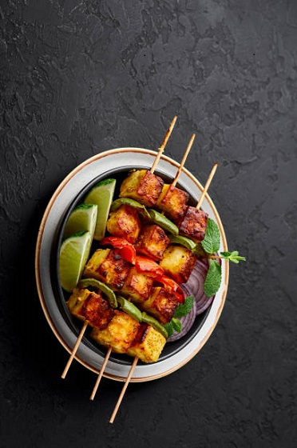

Panner Tikka
- 250g paneer, cut into cubes
- 1/2 cup thick yogurt
- 2 tablespoons gram flour (besan)
- 1 tablespoon ginger-garlic paste
- 1 tablespoon lemon juice
- 1 teaspoon Kashmiri red chili powder (for color, adjust spice level as per preference)
- 1/2 teaspoon turmeric powder
- 1 teaspoon garam masala
- 1 teaspoon cumin powder
- 1 teaspoon coriander powder
- 1 tablespoon oil
- Salt to taste
Ingredients of Panner Tikka
For the skewers:
- Onion, cubed
- Bell peppers (capsicum), cubed (use different colors for visual appeal)
- Tomato, cubed
Garnish:
- Lemon wedges
- Fresh coriander leaves
- In a mixing bowl, add all the marinade ingredients - yogurt, gram flour, ginger-garlic paste, lemon juice,
red chili powder, turmeric powder, garam masala, cumin powder, coriander powder, oil, and salt. Mix everything well to form a smooth marinade. - Add the paneer cubes to the marinade and coat them evenly with the mixture. Cover the bowl and let it marinate for at
least 1-2 hours in the refrigerator. The longer you marinate, the better the flavors will infuse into the paneer. - If using wooden skewers, soak them in water for about 30 minutes to prevent burning during grilling.
- After marinating, thread the marinated paneer, cubed onions, bell peppers, and tomatoes onto the skewers alternately.
You can arrange them in any pattern you like. - Preheat your grill or barbecue to medium-high heat. You can also use an oven with a grill/broil function.
- Place the skewers on the grill or in the oven and cook for about 10-15 minutes, turning them occasionally,
until the paneer and vegetables are charred and cooked through. Baste the paneer with some oil or melted butter for added flavor and to prevent them from drying out. - Once the Paneer Tikka is cooked and nicely grilled, remove the skewers from the heat.
- Garnish with fresh coriander leaves and serve hot with lemon wedges on the side.
Recipe
